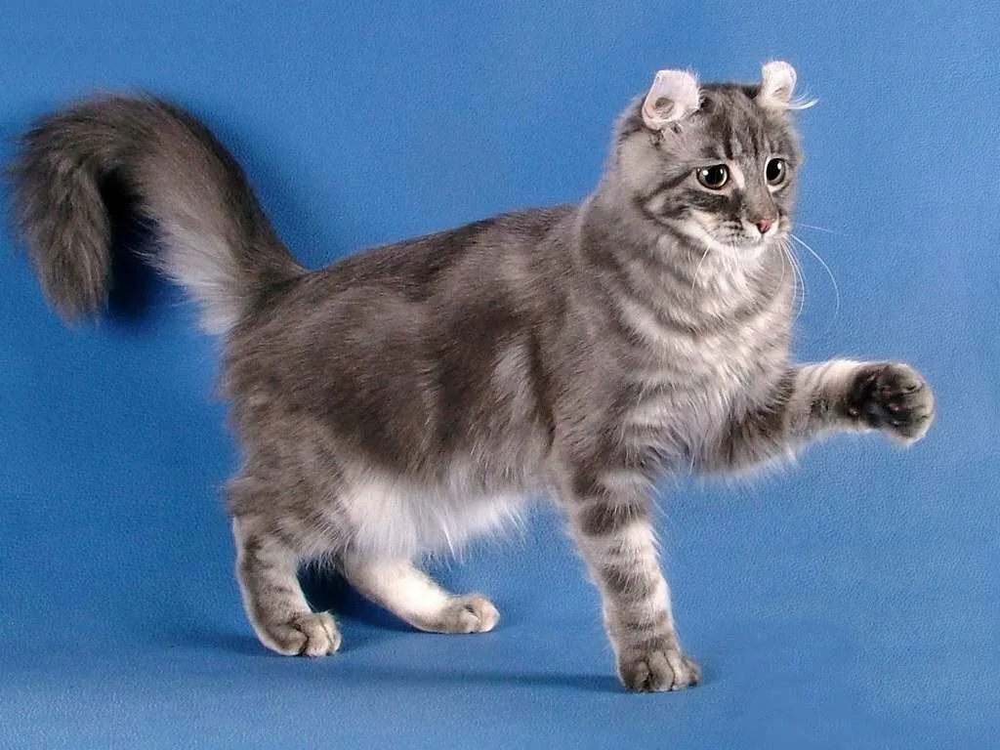

Американский кёрл — порода кошек, отличающаяся необычными загнутыми назад ушами. Это дружелюбные, ласковые и игривые кошки, которые отлично ладят с детьми и другими животными.
Кёрлы — настоящие компаньоны. Они сохраняют игривость на протяжении всей жизни, но при этом не навязчивы. Эти кошки очень привязаны к хозяевам, но спокойно переносят одиночество. Они умны, легко обучаются и прекрасно ладят с детьми и другими питомцами.
Уход за американским кёрлом довольно прост. Несмотря на необычную форму ушей, они не требуют особого ухода — достаточно чистить их раз в неделю. Шерсть нужно расчёсывать 1-2 раза в неделю. Купать — по мере загрязнения. Также не забывайте стричь когти и следить за здоровьем зубов.